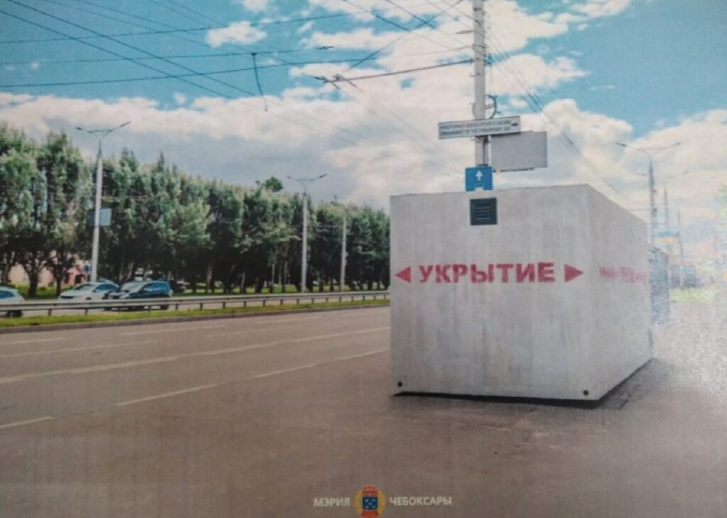

01
Политика и выборы · событие дня
В бюджет Ульяновска на 2027 год внесут новую строку расходов – на возведение сборных укрытий в общественных местах
Их предлагают изготовить несколько десятков, стоимость каждого составляет около полумиллиона рублей. Инициативу выдвинули в Гордуме, глава города ее поддержал. Пока же депутаты провели аудит имеющихся в их округах убежищ. Что показали проверки и какими будут мобильными укрытия - в нашем материале.